Software que transforma el movimiento del cuerpo humano en sonido. Cuerpo humano y tecnología transformados en arte, unidos en un solo proyecto.
¿Y si tu cuerpo fuera un instrumento musical? No una metáfora, no una danza, un instrumento real donde cada gesto produce un sonido único, donde tu postura da forma al paisaje sonoro a tu alrededor.
CuerpoSonoro nació de esa pregunta. Es un proyecto de software que explora la conexión entre el movimiento corporal y la generación de sonido en tiempo real, convirtiendo el cuerpo humano en una interfaz musical expresiva.
El software captura el movimiento corporal a través de una cámara y lo traduce en parámetros musicales. Cada gesto, cada postura genera una respuesta sonora diferente. No hay partituras ni secuencias pregrabadas: tú creas el sonido con tu propio cuerpo en tiempo real.
El principio artístico clave: el cuerpo no “toca notas” — el cuerpo da forma al sonido. No es un instrumento que dispara eventos discretos, sino una interfaz que moldea continuamente un paisaje sonoro vivo. Cualquier posición del cuerpo produce un estado sonoro interesante; no hay “notas falsas”. Es como meter las manos en arcilla: siempre hay una forma, solo cambia cuál.
Experimenta CuerpoSonoro directamente en tu navegador. La demo web usa MediaPipe.js para la detección de postura y la Web Audio API para la síntesis de sonido — no necesitas instalar nada.
Si la demo no carga arriba, puedes abrirla en una nueva pestaña.
CuerpoSonoro se sitúa exactamente donde me gusta trabajar: la intersección del arte, la tecnología y la experiencia humana. Es un proyecto que requiere pensamiento musical, habilidad de programación y una comprensión del cuerpo como medio expresivo.
Representa lo que creo que la tecnología debería ser: una herramienta que sirve a las personas, amplía sus capacidades creativas y crea experiencias que de otro modo no existirían.
CuerpoSonoro ejecuta un pipeline en tiempo real que va desde la captura de cámara hasta la salida de audio en menos de 80 milisegundos. Así fluyen los datos por el sistema:
El sistema usa MediaPipe Pose para detectar 33 puntos corporales en tiempo real a ~20–22 FPS. A partir de estas coordenadas, un módulo de extracción de features calcula 17 descriptores de movimiento que describen el carácter de tu movimiento — no solo dónde está tu cuerpo, sino cómo se mueve:
Cada feature de movimiento controla un aspecto específico del sonido. El mapeo está diseñado para ser intuitivo — tu cuerpo entiende la conexión antes de que tu mente lo haga:
CuerpoSonoro es open source. Explora el código, ejecútalo en local o construye sobre él.